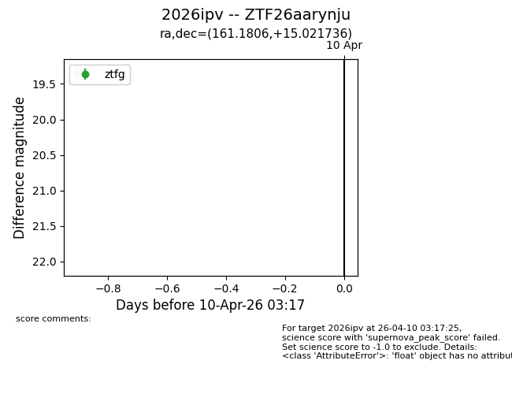
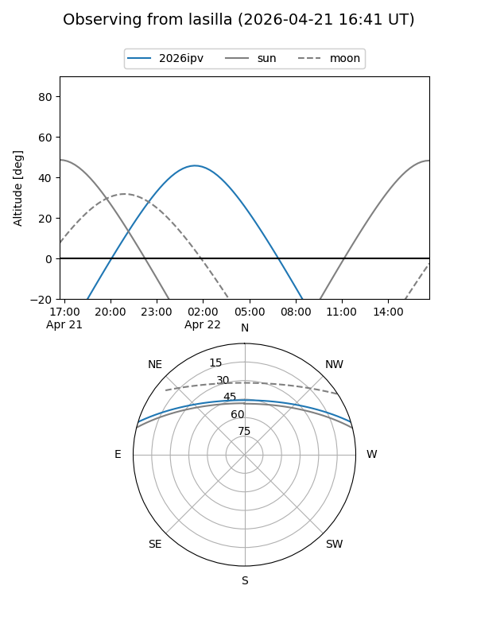
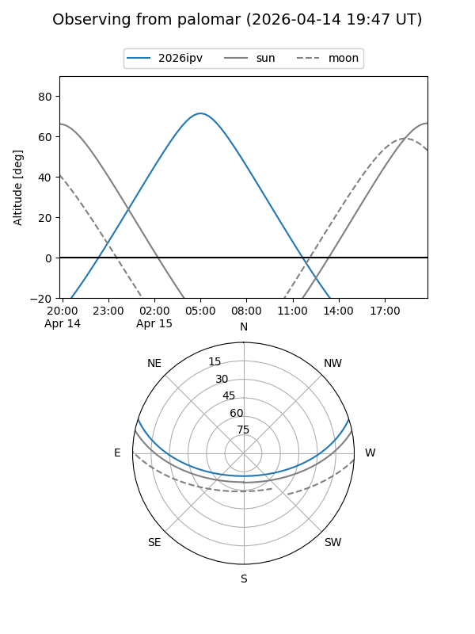
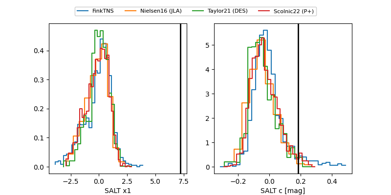

2026ipv
Target 2026ipv at 2026-04-10 03:24
Aliases and brokers:
FINK: link
Lasair: link
ALeRCE: link
TNS: link
YSE: link
alt names
ZTF26aarynju (ztf,fink_ztf)
2026ipv (tns,yse)
Coordinates:
equatorial (ra, dec) = 161.1806,+15.02174
equatorial (HMS+DMS) = 10:44:43.36,+15:01:18.25
galactic (l, b) = (228.7932,+58.17766)
Flags:
Photometry:
last ztfg=19.35
1 ztfg detections
Lightcurve

Visibility


Additional plots
